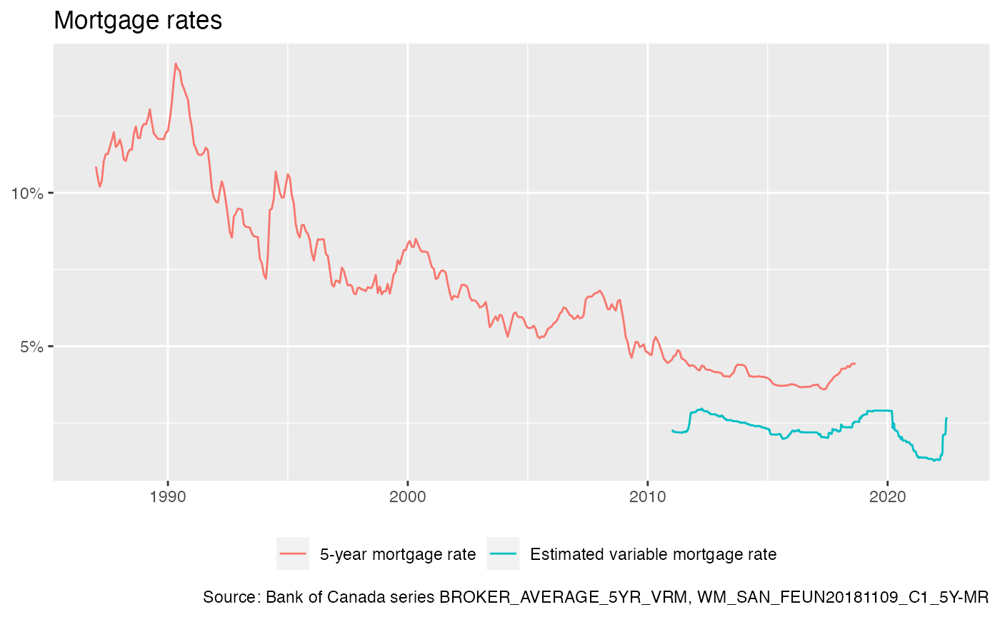

library(dplyr)
#>
#> Attaching package: 'dplyr'
#> The following objects are masked from 'package:stats':
#>
#> filter, lag
#> The following objects are masked from 'package:base':
#>
#> intersect, setdiff, setequal, union
library(ggplot2)
library(canbank)The package gives access ot the Bank of Canada data API. Currently there are 8,359 data series available, grouped into 801. We obtain basic information for the series or series groups.
series_list <- list_boc_series()
#> Accessing BOC series list from cache...
series_group_list <- list_boc_series_groups()
#> Accessing BOC series list from cache...
head(series_list) %>% knitr::kable()| name | label | description | link |
|---|---|---|---|
| IEXE0102 | USD_CLOSE | U.S. dollar (close) | https://www.bankofcanada.ca/valet/series/IEXE0102 |
| IEXE0103 | USD_HIGH | U.S. dollar (high) | https://www.bankofcanada.ca/valet/series/IEXE0103 |
| IEXE0104 | USD_LOW | U.S. dollar (low) | https://www.bankofcanada.ca/valet/series/IEXE0104 |
| IEXE0106 | USD_CLOSE_90_DAY | U.S. dollar closing,90-day | https://www.bankofcanada.ca/valet/series/IEXE0106 |
| EUROCAE01.CL | EUR_CLOSE | European Euro (close) | https://www.bankofcanada.ca/valet/series/EUROCAE01.CL |
| IEXE0301.CL | DKK_CLOSE | Danish krone (close) | https://www.bankofcanada.ca/valet/series/IEXE0301.CL |
Data discovery is still somewhat cumbersome, we can search for phrases in the labels or description.
| name | label | description |
|---|---|---|
| V37756 | Mobile homes | Canadian dollar loans - Loans to Canadian individuals for non-business purposes - To purchase consumer goods and other personal services |
| FSR_2018JUNE_C3S1 | Residential mortgage credit and home equity lines of credit; 3-month seasonally adjusted annualized rate | June 2018 FSR; Chart 3; Residential mortgage credit and home equity lines of credit; 3-month seasonally adjusted annualized rate |
| FSR_2018JUNE_C3S2 | Consumer credit, excluding home equity lines of credit; 3-month seasonally adjusted annualized rate | June 2018 FSR; Chart 3; Consumer credit, excluding home equity lines of credit; 3-month seasonally adjusted annualized rate |
| FSR_2018JUNE_C7S1 | Year-over-year growth in national quality-adjusted benchmark prices; Single-family homes | June 2018 FSR; Chart 7; Year-over-year growth in national quality-adjusted benchmark prices; Single-family homes |
| FSR_2018JUNE_C8AS1 | 3-month seasonally adjusted annualized growth in quality-adjusted benchmark prices in the Greater Toronto Area; Single-family homes | June 2018 FSR; Chart 8a; 3-month seasonally adjusted annualized growth in quality-adjusted benchmark prices in the Greater Toronto Area; Single-family homes |
| FSR_2018JUNE_C8BS1 | 3-month seasonally adjusted annualized growth in quality-adjusted benchmark prices in the Greater Vancouver Area; Single-family homes | June 2018 FSR; Chart 8b; 3-month seasonally adjusted annualized growth in quality-adjusted benchmark prices in the Greater Vancouver Area; Single-family homes |
| FSR_2019_C3_S00 | Residential mortgage credit and home equity lines of credit | NA |
| FSR_2019_C3_S01 | Consumer credit, excluding home equity lines of credit | NA |
| FSHUB_20201105_C3_S2 | Homeowners with a mortgage | NA |
| FSHUB_20201105_C8B_S2 | Homeowners | NA |
| FSHUB_20210128_C3B_S1 | Homeowners | NA |
| FSHUB_20210317_C2_S2 | Multiple Listing Service Home Price Index for Canada, year-over-year percentage change (right scale) | NA |
| FSHUB_20210317_C4_S1 | Single-family homes | NA |
| FSHUB_20210317_C8_S1 | Consumer credit, including home equity lines of credit | NA |
| SAN_MIKA20210428_C1_S3 | Percentage of homes sold over asking (right scale) | NA |
| FSR_2021_C3_S1 | Consumer debt, including home equity lines of credit | NA |
| FSHUB_20210505_C3B_S1 | Homeowners | NA |
If we are intersted in MLS home price index, we might want to inspect the series group FSHUB_20210317_C2.
get_boc_series_group("FSHUB_20210317_C2") %>%
mutate(name=gsub(" \\(.+\\)$","",label)) %>%
ggplot(aes(x=Date,y=Value)) +
geom_line(colour="steelblue",size=1) +
geom_smooth(se=FALSE,method="lm",formula=y~1,colour="brown",size=0.5) +
facet_wrap(~name,scales="free_y",ncol=1) +
labs(title="MLS overview data for Canada with long-run averages",
x=NULL,y=NULL,
caption="Source: Bank of Canada series group FSHUB_20210317_C2")
#> Downloading BOC series group data for FSHUB_20210317_C2Or we might be interested in 5-year mortgage rates.
mortgate_rate_series <- list_boc_series() %>%
filter(grepl("mortgage rate",label))
#> Accessing BOC series list from cache...
mortgate_rate_series %>%
select(-link) %>%
knitr::kable()| name | label | description |
|---|---|---|
| BROKER_AVERAGE_5YR_VRM | Estimated variable mortgage rate | Estimated variable mortgage rate |
| WM_SAN_BILO20181003_C1_S4 | 5-year mortgage rate (left scale) | Share of new mortgages with a loan-to-income ratio over 450 per cent |
| WM_SAN_FEUN20181109_C1_5Y-MR | 5-year mortgage rate | 5-year mortgage rate |
Taking a closer look at the 5-year fixed and estimated variable rates.
get_boc_series(c("BROKER_AVERAGE_5YR_VRM","WM_SAN_FEUN20181109_C1_5Y-MR")) %>%
ggplot(aes(x=Date,y=Value/100,colour=label)) +
geom_line() +
scale_y_continuous(labels=scales::percent) +
theme(legend.position = "bottom") +
labs(title="Mortgage rates",
x=NULL,y=NULL, colour=NULL,
caption="Source: Bank of Canada series BROKER_AVERAGE_5YR_VRM, WM_SAN_FEUN20181109_C1_5Y-MR")
#> Downloading BOC series data for BROKER_AVERAGE_5YR_VRM
#> Downloading BOC series data for WM_SAN_FEUN20181109_C1_5Y-MR